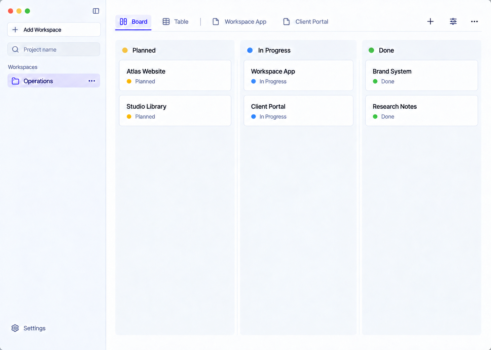
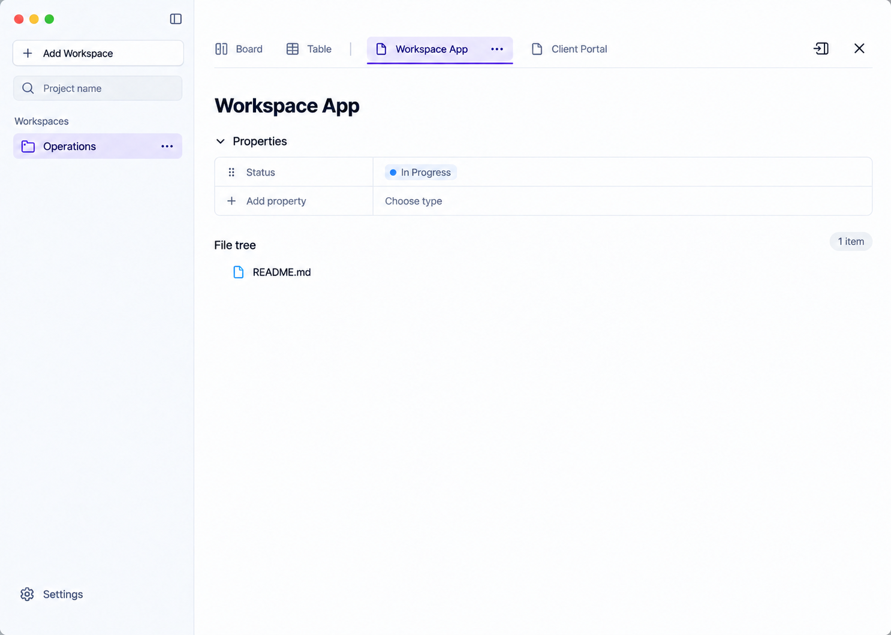

Compact · действия в верхней строке
Выбранный компактный вид. Одна строка вкладок и действий; верхние кнопки — иконки без подписей, рамок и фоновой подсветки при наведении.
Доска
Справа: + Add View · ползунки Customize Columns · … меню вида. Вкладки карточек остаются доступны.

Развёрнутая карточка
Справа: вернуть в боковую панель · закрыть. Workspace App выбран, Client Portal остаётся открытым.

Статичные концепты. Hover без фоновой подсветки — требование будущей реализации; здесь взаимодействие не проверяется. Код и рабочие данные не изменены.
Точные изменения и карта действий